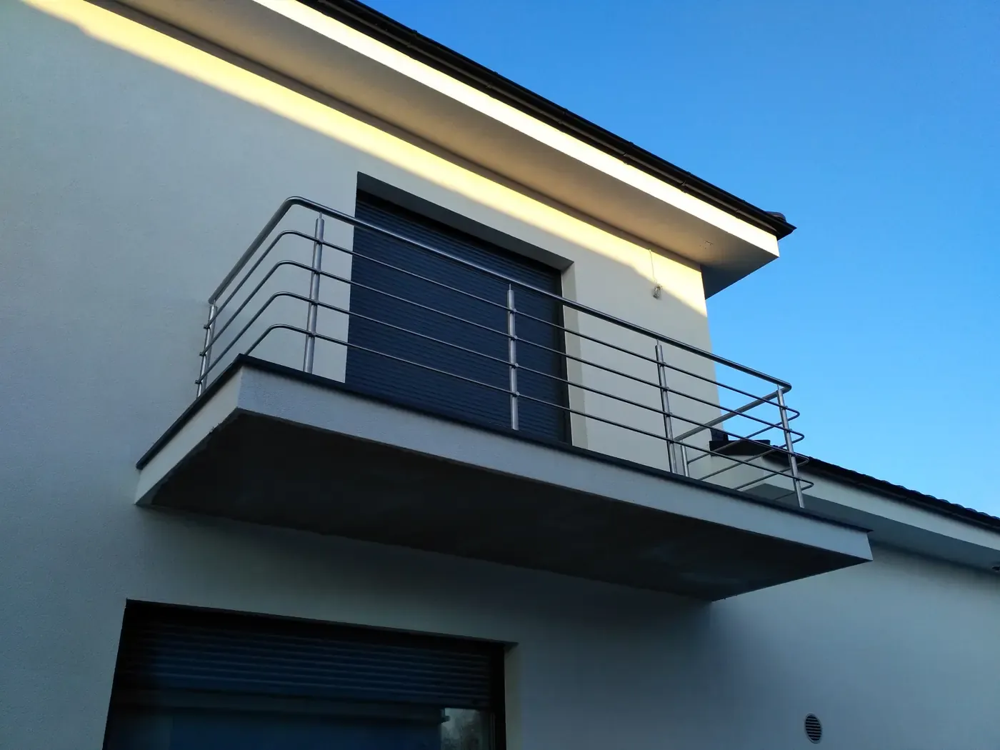
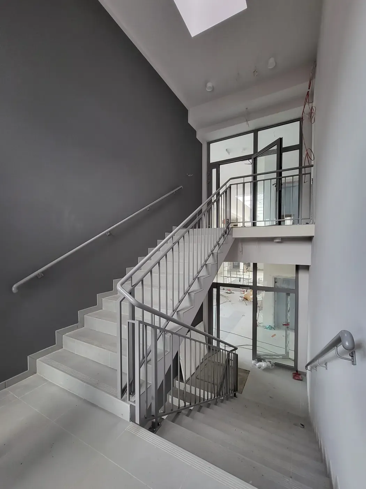
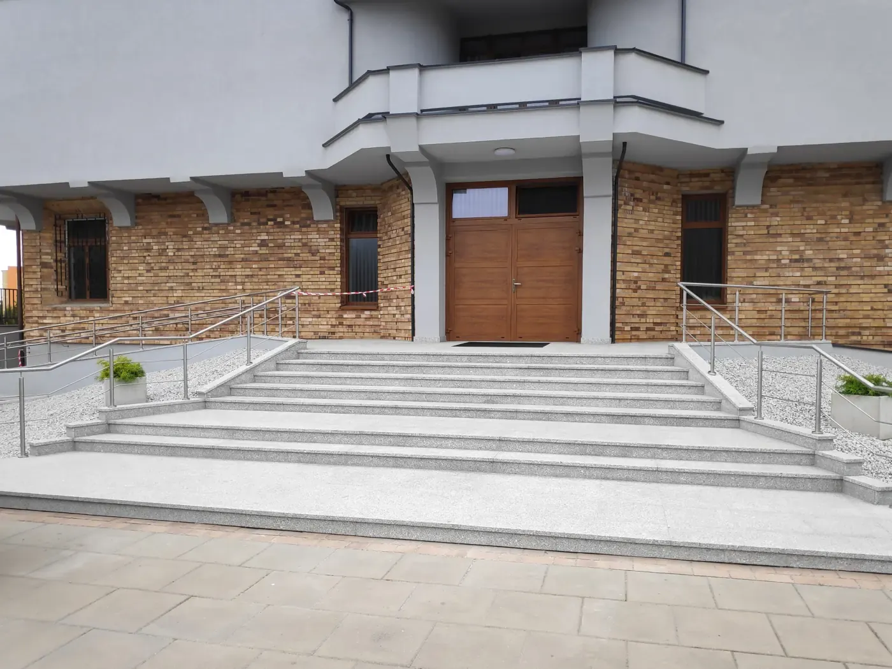
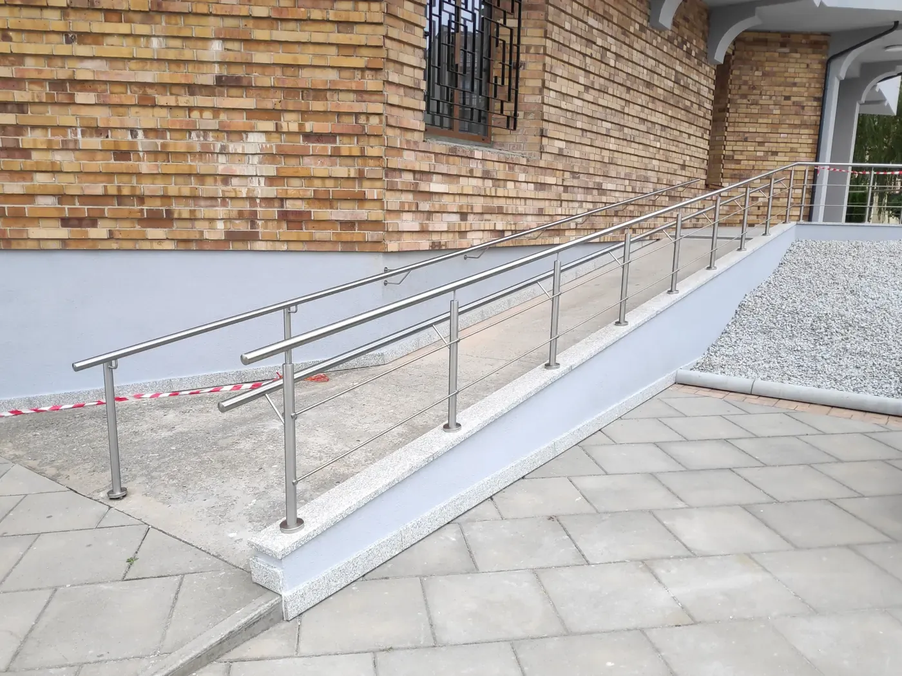
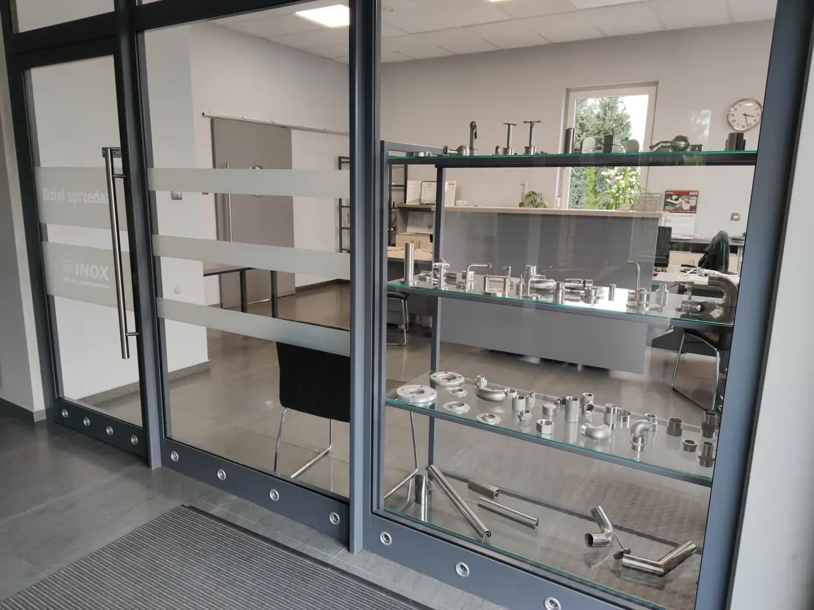

Skręcane, spawane, malowane proszkowo, ze szkłem i całoszklane. Na schody, balkony, tarasy, podjazdy i pochylnie. Wyślij zdjęcie i wymiary, a odeślemy wstępną wycenę.
Wykonujemy balustrady i poręcze ze stali nierdzewnej na balkonach, tarasach, klatkach schodowych, schodach zewnętrznych i wewnętrznych, a także na podjazdach, pochylniach i rampach. Montujemy w Ostrowie Wielkopolskim i okolicy, w Kaliszu, Krotoszynie czy Pleszewie, a przy większych zleceniach także dalej, do ok. 100 km.
Przesuń w bok, żeby zobaczyć więcej

Balkony i tarasy
Mocowanie do płyty od czoła albo od góry, ze szkłem albo z rurek.

Schody wewnętrzne i klatki schodowe
Schody jednobiegowe, zabiegowe, ze spocznikiem i łamane.

Schody zewnętrzne
Wejścia do domów, firm i budynków użyteczności publicznej.

Podjazdy, pochylnie i rampy
Poręcze przy pochylniach dla wózków, podjazdach i rampach.
Jak zamówić balustradę
Nie musisz znać nazwy systemu. Wystarczą zdjęcie, wymiary i miejscowość, resztę ustalimy na spotkaniu.
1
Niezobowiązująca wycena
Prześlij przez formularz miejscowość, zdjęcie miejsca montażu, wymiary i typ balustrady. Odeślemy wstępną wycenę.
2
Spotkanie na miejscu
Omawiamy szczegóły, sprawdzamy wymiary i możliwości montażu. Na tej podstawie przygotowujemy ostateczną wycenę.
3
Realizacja
Po akceptacji wyceny robimy projekt wykonawczy, wykonujemy balustradę w warsztacie, dowozimy ją i montujemy.
Typy balustrad i nasze realizacje
Rozwiń typ, żeby zobaczyć opis i zdjęcia. Każda realizacja jest robiona na wymiar, więc traktuj je jako punkt wyjścia do rozmowy.
Balustrada skręcana
Najpierw słupki, potem wypełnienie z rurek · 6 zdjęć
Najpierw mocujemy słupki, a następnie wypełnienie z rurek. Każdy słupek dopasowujemy wysokością na miejscu, żeby poręcz tworzyła idealnie prostą linię, a stopy słupków potrafimy dopasować do krzywizn.
poręcz zawsze przyspawana do słupków
dowolna liczba wypełnień na dowolnych wysokościach
Stal nierdzewna w kolorze z palety RAL K7 · 6 zdjęć
Balustrady spawane możemy pomalować proszkowo na kolor z palety RAL K7. Malujemy stal nierdzewną, więc nawet przy uszkodzeniu warstwy farby balustrada nie zacznie rdzewieć.
Słupki nierdzewne, szyba na zaciskach lub rotulach · 3 zdjęcia
Konstrukcja skręcana albo spawana ze słupkami, a tafla szkła montowana na zaciskach. W standardzie stosujemy szkło laminowane. Szybę można też zamocować na rotulach (uchwytach punktowych) i wtedy zawsze stosujemy szkło hartowane.
Bez słupków, na rotulach lub profilu aluminiowym · 4 zdjęcia
Szyba mocowana na rotulach albo w liniowym profilu aluminiowym, bez słupków. Stosujemy szkło o grubości minimum 16 mm VSG+ESG, czyli hartowane i laminowane jednocześnie.
Dwie tafle połączone specjalną folią. Po zbiciu szyba nie rozpada się na kawałki, a tafla nie wypada z konstrukcji.
ESG
Hartowane
Znacznie wzmocnione obróbką termiczną i odporne na szok termiczny. Po zbiciu rozpada się na nieostre kawałki.
VSG+ESG
Hartowane i laminowane
Dwie tafle szkła hartowanego połączone folią. Stosowane głównie w balustradach całoszklanych i przy rotulach.
Kolory
Zwykłe szkło bezbarwne (float), a w razie potrzeby szkło optiwhite, czyli odbarwione.
Szkło barwione w masie, przyciemniane w brązie lub czerni.
Intensywność koloru zmieniamy, łącząc szybę przezroczystą z barwioną albo dwie barwione. Matowa folia mocno podbija kolor i eliminuje przezroczystość.
Grubości
8mmdwie szyby 4 mm i folia wypełnienie między słupkami
12mmdwie szyby 6 mm i folia wypełnienie między słupkami
16+mmdwie szyby 8 mm i folia lub grubsze balustrady całoszklane na rotulach lub profilach liniowych
Więcej o stali
304Stal nierdzewna gatunku 304. Przy basenach i w innych trudnych warunkach możemy zastosować wyższy gatunek.
2,0mmŚcianka rur i profili. Wyjątek to wypełnienia, gdzie stosujemy ściankę 1,5 mm.
satynaWykończenie satynowe, czyli delikatny szlif na wszystkich elementach.
Od czego zależy cena balustrady
Cennika nie publikujemy, bo zmiennych jest zbyt wiele. Na cenę wpływają:
Typ balustrady
Ilość i rodzaj poszczególnych elementów
Wielkość zlecenia
Warunki montażu: układ, dostępność, podłoże
Odległość od siedziby: w najbliższej okolicy nie doliczamy dojazdu, przy dalszych miejscowościach doliczamy do wyceny koszt wyjazdów, licząc, ile osób i ile wyjazdów będzie potrzebnych (obszar działania)
Co zawiera cena
Projekt wykonawczy dopasowany do Twoich oczekiwań. To rysunek do wykonania, a nie wizualizacja.
Wykonanie balustrady w naszym warsztacie.
Dostarczenie i montaż.

Dlaczego INOX
DoświadczenieJesteśmy na rynku od 1998 roku, a większość ekipy pracuje z nami cały ten czas.
Własne rozwiązania techniczneWykonujemy u siebie różne elementy i wymyślamy rozwiązania na nietypowe problemy techniczne.
Przepisy i formalnościZnamy prawo budowlane i skrupulatnie przekazujemy dokumentację, której wymaga klient.
TerminowośćNie składamy obietnic bez pokrycia i dopasowujemy się do Twoich terminów.
Gwarancja, za którą ktoś stoiJesteśmy firmą o stabilnej sytuacji. Jeśli coś będzie nie tak z Twoją balustradą, zgłosisz się do nas także za wiele lat.
Wzory balustrad możesz obejrzeć w biurze przy ul. Sadowej 26A, pn-pt 8:00-16:00. Najlepiej zadzwoń wcześniej, żeby zastać specjalistę.
Chcesz zmontować balustradę sam?
Sprzedajemy elementy, rury i profile. Zobacz, czym gotowe elementy różnią się od balustrady, którą wykonujemy i montujemy.
Słupki
Gotowe elementyGotowe słupki o stałej wysokości i stałym rozstawie otworów.
Balustrada z montażem INOXNie używamy gotowych słupków: wypełnień może być dowolnie dużo, na dowolnych wysokościach. Wysokość każdego słupka dopasowujemy tak, żeby poręcz tworzyła idealnie prostą linię, a stopy dopasowujemy do krzywizn.
Poręcz
Gotowe elementyElementy przystosowane do montażu na śruby (po wykonaniu gwintów) albo na nity.
Balustrada z montażem INOXPoręcz zawsze przyspawana do słupka.
Wykończenie
Gotowe elementyRura w szlifie fabrycznym, który może mieć niedoskonałości.
Balustrada z montażem INOXWszystkie elementy dodatkowo satynujemy.
Nietypowe miejsca
Gotowe elementyDo dyspozycji są konkretne elementy, co nie zawsze wystarcza przy niestandardowym układzie.
Balustrada z montażem INOXElementy robimy pod konkretne miejsce, także przy nietypowych schodach i trudnym montażu.
Nie publikujemy cennika, bo na cenę wpływa zbyt wiele rzeczy: typ balustrady, ilość i rodzaj elementów, wielkość zlecenia, warunki montażu i odległość od Ostrowa. Wyślij przez formularz miejscowość, zdjęcie i wymiary, a odeślemy wstępną wycenę.
Dlaczego ceny balustrad podajecie netto?
Bo stosuje się dwie stawki VAT: 8%, gdy montujemy balustradę w domu dla osoby prywatnej, i 23%, gdy płatnikiem jest firma.
Czy spotkanie na miejscu jest płatne?
Nie. Spotykamy się bezpłatnie na miejscu realizacji, omawiamy szczegóły, sprawdzamy wymiary i możliwości montażu, a potem przygotowujemy ostateczną wycenę.
Czym różni się balustrada skręcana od spawanej?
W skręcanej najpierw mocujemy na miejscu słupki, a potem wypełnienie z rurek. Spawaną wykonujemy w całości albo w częściach w warsztacie i na miejscu tylko montujemy. Spawaną możemy też pomalować proszkowo na kolor RAL.
Robicie też barierki na schody i podjazdy?
Tak. Barierki, balustrady i poręcze ze stali nierdzewnej robimy na schody wewnętrzne i zewnętrzne, balkony, tarasy, a także na podjazdy, pochylnie i rampy.
Jak daleko od Ostrowa montujecie balustrady?
Do około 100 km od Ostrowa Wielkopolskiego: między innymi w Kaliszu, Krotoszynie, Pleszewie, Jarocinie, Kępnie i Ostrzeszowie, a przy większych zleceniach także w Lesznie, Koninie, Sieradzu czy Wrocławiu. Pełna lista miejscowości jest w zakładce Obszar działania.
Czy mogę zobaczyć wzory przed zamówieniem?
Tak. W biurze sprzedaży przy ul. Sadowej 26A są na wystawie standardowe wzory. Najlepiej zadzwonić wcześniej, żeby zastać specjalistę.
Czy przyjmujecie małe zlecenia?
Tak. Jesteśmy otwarci na małe i duże realizacje i dopasujemy się do budżetu.
Niezobowiązująca wycena
Podaj miejscowość, wymiary i typ balustrady, który Cię interesuje, a najlepiej dołącz zdjęcie miejsca montażu. Im więcej szczegółów, tym dokładniejsza wstępna wycena. Potem umówimy się na spotkanie na miejscu.
Używamy niezbędnych plików cookies, żeby strona i koszyk działały. Za Twoją zgodą wczytamy też mapę Google i narzędzia statystyczne. Szczegóły w polityce prywatności.